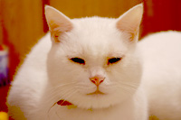

彼等は田舎（ゐなか）に住んでゐるうちに、猫を一匹飼ふことにした。猫は尾の長い黒猫だつた。彼等はこの猫を飼ひ出してから、やつと鼠の災難だけは免（まぬか）れたことを喜んでゐた。

半年（はんとし）ばかりたつた後（のち）、彼等は東京へ移ることになつた。勿論猫も一しよだつた。しかし彼等は東京へ移ると、いつか猫が前のやうに鼠をとらないのに気づき出した。「どうしたんだらう？ 肉や刺身（さしみ）を食はせるからかしら？［＃底本では「？」の後は１字アキ］」「この間Ｒさんがさう言つてゐましたよ。猫は塩の味を覚えると、だんだん鼠をとらないやうになるつて。」――彼等はそんなことを話し合つた末、試みに猫を餓ゑさせることにした。
しかし、猫はいつまで待つても、鼠をとつたことは一度もなかつた。そのくせ鼠は毎晩のやうに天井裏（てんじやううら）を走りまはつてゐた。彼等は、――殊に彼の妻は猫の横着（わうちやく）を憎み出した。が、それは横着ではなかつた。猫は目に見えて痩せて行きながら、掃（は）き溜（だ）めの魚（さかな）の骨などをあさつてゐた。「つまり都会的になつたんだよ。」――彼はこんなことを言つて笑つたりした。
そのうちに彼等はもう一度田舎（ゐなか）住ひをすることになつた。けれども猫は不相変（あひかはらず）少しも鼠をとらなかつた。彼等はとうとう愛想（あいそ）をつかし、気の強い女中に言ひつけて猫を山の中へ捨てさせてしまつた。
すると或晩秋の朝、彼は雑木林（さふきばやし）の中を歩いてゐるうちに偶然この猫を発見した。猫は丁度（ちやうど）雀を食つてゐた。彼は腰をかがめるやうにし、何度も猫の名を呼んで見たりした。が、猫は鋭い目にぢつと彼を見つめたまま、寄りつかうとする気色（けしき）も見せなかつた。しかもパリパリ音を立てて雀の骨を噛み砕いてゐた。
或温泉にゐる母から息子（むすこ）へ人伝（ひとづ）てに届けたもの、――桜の実（み）、笹餅、土瓶（どびん）へ入れた河鹿（かじか）が十六匹、それから土瓶の蔓に結（むす）びつけた走り書きの手紙が一本。
その手紙の一節はかうである。――「この河鹿（かじか）は皆雄（をす）に候。雌（めす）はあとより届け候。尤（もつと）も雌雄（めすをす）とも一つ籠に入れぬやうに。雌は皆雄を食ひ殺し候。」
わたしは丁度（ちやうど）十二の時に修学旅行に直江津（なほえつ）へ行（ゆ）きました。（わたしの小学校は信州の×と云ふ町にあるのです。）その時始めて海と云ふものを見ました。それから又汽船と云ふものを見ました。汽船へ乗るには棧橋（さんばし）からはしけに乗らなければなりません。私達のゐた棧橋にはやはり修学旅行に来たらしい、どこか外（ほか）の小学校の生徒も大勢（おほぜい）わいわい言つてゐました。その外の小学校の生徒がはしけへ乗らうとした時です。黒い詰襟の洋服を着た二十四五の先生が一人（ひとり）、（いえ、わたしの学校の先生ではありません。）いきなりわたしを抱（だ）き上げてはしけへ乗せてしまひました。それは勿論間違ひだつたのです。その先生は
暫（しばら）くたつてから、わたしの学校の先生がわたしを受けとりにやつて来た時、何度もかう言つてあやまつてゐました。――「どうもうちの生徒にそつくりだもんですから。」
その先生がわたしを抱き上げてはしけへ乗せた時の心もちですか？ わたしはずゐぶん驚きましたし、怖いやうにも思ひましたけれども、その外（ほか）にまだ何（なん）となく嬉しい気もしたやうに覚えてゐます。
銀座四丁目（ぎんざよんちやうめ）。或電車の運転手が一人（ひとり）、赤旗を青旗に見ちがへたと見え、いきなり電車を動かしてしまつた。が、間違ひに気づくが早いか、途方（とほう）もないおほ声に「アヤマリ」と言つた。僕はその声を聞いた時、忽ち兵営や練兵場を感じた。僕の直覚は当たつてゐたかしら。
あの男は何をしても失敗してゐた。最後にも――あの男は最後には壮士役者（さうしやくしや）になり白瀬中尉（しらせちうゐ）を当てこんだ「南極探険」と云ふ芝居へ出ることになつた。
勿論それは夏芝居だつた。あの男は唯のペングイン鳥になり、氷山（ひようざん）の間（あひだ）を歩いてゐた。そのうちに烈しい暑さの為にとうとう悶絶（もんぜつ）して死んでしまつた。
| 誕生 | 1892年3月1日 日本・東京市京橋区入船町8丁目 |
|---|---|
| 死没 | 1927年7月24日（満35歳没） |
| 職業 | 小説家 |
| 言語 | 日本語 |
| 国籍 | 日本 |
| 教育 | 学士（文学） |
| 最終学歴 | 東京帝国大学英文科 |
| ジャンル | 短編小説 |
| 主題 | 近代知識人の苦悩 |
| 文学活動 | 新現実主義 |
| 代表作 | 『羅生門』（1915年） 『鼻』（1916年） 『戯作三昧』（1917年） 『地獄変』（1918年） 『藪の中』（1922年） 『河童』（1927年） 『歯車』（1927年） |
| 配偶者 | 塚本文（1919年 - 1927年） |
| 子供 | 芥川比呂志（長男） 芥川多加志（次男） 芥川也寸志（三男） |
| 親族 | 塚本能五郎（義父） 芥川貴之志（孫） 芥川麻実子（孫） |